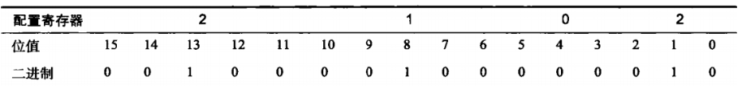

路由的基本操作
操作模式切换
用户模式
Router>
#通常可以查看统计信息
Router>logout
#退出用户模式
特权模式
Router>enable
#进入特权模式。用于查看和修改路由器配置
Router#disable
#退出特权模式
全局配置模式
Router#configure terminal
#进入全局配置模式。全局配置模式中一旦修改就会影响整个路由器
Router(config)#exit
#退出全局模式，或用快捷键ctrl+z
帮助和命令补全
在IOS中，可以使用tab键进行命令补全。可以使用？获取命令帮助
范例：
Router#conf #在这里按tab键
Router#configure t #补全为configure，输入t，再按tab键
Router#configure terminal #补全为configure terminal
Router#clock ? #列出当前模式中，clock后可以接的命令
支持快捷键
ctrl+u 从光标所在位置删除到行首
ctrl+a 光标移动到行首
ctrl+e 光标移动到行尾
历史命令
Router#show terminal #查看终端配置与命令保存数
Router#show history #查看历史命令
Router#terminal history size 50 #修改历史命令保存条数为50条
查看路由器基本信息
Router#show version
路由器和交换机的密码管理
设置主机名
Router>enable
Router#configure terminal
Router(config)#hostname lamp #将主机名设置为lamp
设置口令
路由器密码
接口密码：一登陆不能输入任何命令，需要马上输入密码
console口密码
虚拟接口密码
telnet密码
ssh密码
aux接口密码
特权模式密码：登录之后，执行enable命令，进入特权模式时需要
设置特权模式密码
Router(config)#enable password 123456 #设置特权非加密口令
Router(config)#enable secret 123456 #设置特权加密口令
#加密密码优先级更高，如果设置了加密密码，则非加密密码不可用
设置console端口登录密码
Router(config)#line console 0
Router(config-line)#password 123456 #为console口设置登录密码
Router(config-line)#login #启用密码检查
在接口模式中，设置回话超时时间
Router(config-line)#exec-timeout 0 0
#设定登录之后，多久超时。格式是0分0秒，即永不超时。默认10分钟不操作，会被踢出。
Router(config-line)#logging synchronous
#阻止控制台信息，避免打扰命令输入
设置telnet登录口令
Router(config)#line vty 0 15
Router(config)#password 123456
Router(config)#login
#telnet是明文传输登录不安全，请慎用
Router(config)#line vty 0 15
Router(config)#no loggin
#允许telnet无密码登录（不安全，不允许使用）
密码加密
密码除了Router(config)#enable secret密码是加密保存的，其他密码都是明文保存，可以通过
Router#show running-config 查看running-config
Router(config)#service password-encryption #开启加密服务，所有密码都会密文保存
SSH登录
设置用户名和域名
Router(config)#hostname lamp
Router(config)#ip domain-name lamp
#修改主机名和域名，生成密钥时需要用到
#必须设定路由器时间
生成加密密钥
lamp(config)#crypto key generate rsa general-keys modulus 1024
#使用rsa加密，生成1024位密钥，如果钥匙位数小于768位，则不能使用2代SSH协议
设定登录密码
lamp(config)#aaa new-model
#开启AAA(Authentication authorization and Accounting，认证、授权和记账)模式
lamp(config)#username lampbrother password 123456 #设定用户名和密码
设定超时时间、失败次数、版本
lamp(config)#ip ssh time-out 120 #设定超时时间
lamp(config)#ip ssh authentication-retries 5 #设定登录失败最大次数
lamp(config)#ip ssh version 2 #设定ssh版本
设定连接线路
lamp(config)#line vty 0 15
lamp(config)#transport input ssh
#仅允许使用ssh登录，如果还要允许telnet登录，使用命令transport input ssh telnet
#远程登录后，特权模式不设置密码，是不能登录特权模式的
路由器接口操作
查看接口
Router#show running-config #查看runnig-config配置，可以看到当前路由器有哪些接口
选择接口，会进入接口配置模式
Router(config)#interface fastethernet 0/1
#进入快速以太网接口0/1，其中0代表插槽，1代表端口
#有些接口会用0/0/1描述，0代表路由器本身，0代表插槽，1代表端口
接口描述
Router(config)#interface fastethernet 0/1
Router(config-if)#description connect computer01
do命令可以让命令在其他模式运行
激活接口（接口默认是关闭的，需要激活）
Router(config)#interface fastethernet 0/1
Router(config-if)#no shutdown #激活端口
给接口配置ip地址
Router(config)#interface fastethernet 0/1
Router(config-if)#ip address 192.168.1.10 255.255.255.0
Router(config-if)#do show interface f0/1 #可以查看端口信息
时钟频率：只对串口有效，如果使用serial串口，则在DCE（数据通信设备）端需要配置时钟频率，但是DTE（数据终端设备）端不需要配置。
Router(config-if)#clock rate 64000 #给串口设置时钟频率
串口设备还可以通过bandwidth命令来设置位宽，该命令的单位是千位
Router(config-if)#bandwith 1000
保存与删除
保存配置
Router#copy running-config startup-config
#running-config是运行配置，保存在DRAM中，重启后会失效。执行此命令会把running-config复制为startup-config。startup-config是启动配置，保存在NVRAM中，永久生效。
删除配置
Router#earse startup-config
重启路由器
Router#reload
查看接口参数与配置
Router#show interface fastethernet 0/0 #查看fastethernet 0/0该端口的信息
Router#show ip interface #查看ip信息
Router#show ip interface brief #查看所有接口的IP地址和状态
Router#show protocol #查看所有接口上协议
路由器高级操作
一、路由器启动顺序
1、路由器开机自检。检查硬件，以验证设备的所有组件。POST存储在ROM（只读存储器）中，并从ROM中运行。
2、bootstrap查找并加载Cisco IOS系统。bootstrap位于ROM中，用于启动时加载IOS。加载IOS的默认顺序是闪存----TFTP服务器----ROM。所以默认情况是从闪存中加载IOS系统。
3、IOS接管启动过程，并从NVRAM（非易失性随机存储器，指断电后仍然能保存数据，用于保存永久生效的配置文件）中查找启动文件，也就是startup-config文件。（如果有密码也是在加载startup-config文件后密码才生效的，所以破解密码的关键是在启动过程中，忽略startup-config文件）
4、如果在NVRAM中找到startup-config文件，则把这个文件复制到RAM中，生成running-config文件。路由器用running-config初始化路由器，并加载登录界面。如果在NVRAM中没有找到startup-config文件，则向所有接口发送广播，查找TFTP主机，用于配置路由器。如果没有找到TFTP主机，则启动用户交互设置对话模式初始化配置。
二、管理配置寄存器
1、寄存器原理
在NVRAM中，有一个16位的寄存器，用于管理路由器启动时加载的数据。这个16位的寄存器的读取方式是从15到0，按照从左到右的顺序。

默认寄存器的值为0x2102，也就是13位，8位和1位的值是1。如果把每4位按照一组计算，则4个二进制的位的十进制是8、4、2、1。
寄存器中的值用来管理路由器启动时加载的数据的参考表：

所以第6位为1则会忽略NVRAM中的数据，当然就不会加载startup-config文件，当然密码就会失效。所以我们把寄存器的值修改为0x2142就可以忽略NVRAM。
2、查看寄存器的值
Router# show version
Cisco IOS Software, 2800 Software (C2800NM-ADVIPSERVICESK9-M), Version 12.4(15)T1, RELEASE SOFTWARE (fc2) #查看IOS版本
...省略部分信息...
System returned to ROM by power-on
System image file is "c2800nm-advipservicesk9-mz.124-15.T1.bin"
...省略部分信息...
Configuration register is 0x2102 #查看到寄存器中的值
3、查看闪存中的IOS
Router# show flash
System flash directory:
File Length Name/status3 50938004 c2800nm-advipservicesk9-mz.124-15.T1.bin
2 28282 sigdef-category.xml
1 227537 sigdef-default.xml
[51193823 bytes used, 12822561 available, 64016384 total]
63488K bytes of processor board System flash (Read/Write)
4、修改寄存器中的值
Router# configure terminal
Router(config)# config-register 0x2102
三、破解密码
1、首先用console线连接PC和路由器的console口，PC端使用超级终端。
路由器开机，开机60S内按键盘上的“ctrl+break”键，中断启动过程，进入rom moritor模式，此时提示符为rommon 1>
2、修改寄存器的值
rommon 1>confreg 0x2142
(此命令的作用是修改寄存器的值，使路由器忽略加载NVRAM，不加载原有配置)
此为2600系列，如果是2500系列则输入o/r 0x2142。
3、重启路由器
rommon 2>reset （重启路由器，2500系列输入initialize）
4、路由器重启后进入setup对话框
Router> enable #进入特权模式
Router#copy startup-config runing-config #加载原配置
Router(config)# configure terminal #进入全局配置模式
Router(config)# enable secret lamp #修改特权模式密码为lamp
如果有console密码也一起修改
Router(config)#line console 0 #进入console端口
Router(config-line)#password lamp #修改console端口的登录密码为lamp
Router(config-line)#login #启用密码检查
5、然后把寄存器的值改回来，否则再次启动时仍不会加载startup-config。
Router#configure terminal
Router(config)#config-register 0x2102
退出到特权模式，保存配置
Router#copy running-config startup-config
四、Cisco路由发现协议
Cisco发现协议（CDP，Cisco Discovery Protocol），可以收集相邻设备硬件和协议信息，用于故障诊断和网络判断。
1、获取CDP定时器和保持时间信息
Router#show cdp
Global CDP information:
Sending CDP packets every 60 seconds #CDP定时器：每隔多长时间把CDP数据包传输到所有活动接口Sending a holdtime value of 180 seconds #CDP保持时间：从相邻设备接收到的数据包保存时间
Sending CDPv2 advertisements is enabled #发送CDPv2公告
Router#show cdp interface #查看每个接口的路由信息
2、设定CDP时间
Router#cdp timer 60
Router#cdp holdtime 180
3、激活CDP
Router(config)#cdp run
#默认是激活的，如果没有激活，手工激活。激活后需要等待一段时间，才能获取邻居信息
#此命令是激活所有接口
Router(config)#no cdp run #关闭整个路由器所有接口
Router(config)#interface fastethernet 0/0
Router(config)#cdp enable #激活指定接口的CDP
Router(config)#no cdp enable #关闭指定接口的CDP
4、收集邻居信息
Router#show cdp neighbors
Router#show cdp entry * #显示邻居详细信息
Router#show cdp entry * protocol #查看直连设备IP地址
Router#show cdp entry * version #查看直连设备IOS版本
五、路由器网络管理命令
1、telnet命令
telnet是明文传输，不够安全，但是管理方便，所有的管理习惯在Cisco设备中使用telnet命令进行管理
telnet管理路由器需要在路由器上设置vty密码，才能远程登录。需要在所有telnet端口设置相同密码，因为telnet不能选择登录线路。
Router(config)#line vty 0 15
Router(config-line)#password lamp
Router(config-line)#login
#换成另一个路由器，输入密码之后，可以登录管理
Router1#telnet 192.168.1.5
#必须给远程被访问路由器设置特权密码，空密码不能远程连接
2、退出telnet登录
Router1#exit
3、查看登录到路由器上的用户
Router#show users
Router#clear line 100
#踢掉从某个telnet线路登录的用户，线路号可以通过show users查看
4、建立主机名与IP地址对应列表
主机名解析可以通过DNS服务器完成，用主机表需要对每台路由器进行设置，并不方便
Router(config)#ip host r0 192.168.1.1
Router(config)#no ip host r0 #删除主机名
5、配置DNS
Router(config)#no ip domain-lookup
#禁止把不认识的命令进行DNS解析，可以防止输入错误后，进行费时的DNS解析
如果需要指定DNS服务器，需要开启域名查询
Router(config)#ip domain-lookup
Router(config)#ip name-server 202.106.0.20
#指定DNS服务器，需要配置DNS服务器，才能正确解析主机名或域名
6、ping命令
Router#ping 192.168.1.5
7、路由追踪命令
Router#traceroute 域名
8、查看路由进程
Router#show processes
六、路由器备份、升级和恢复
1、准备工作
路由器和电脑用交叉线连接，并能够ping通
电脑启动TFTP服务器端，并指定服务器目录

如果需要将IOS复制到闪存中，需要确定闪存中有足够空间，否则会删除原有的镜像
2、备份IOS到TFTP服务器上
Router#copy flash:c2800nm-ipvoicek9-mz.124-15.T10.bin tftp: #拷贝镜像到tftp
Address or name of romote host []? 192.168.254.252 #输入tftp的IP地址
Destination filename [c2800nm-ipvoicek9-mz.124-15.T10.bin]? #确定镜像名称
3、恢复镜像或使用升级IOS镜像
准备工作同备份一致
Router#copy tftp: flash:
Address or name of romote host []? 192.168.254.252
Source filename []? c2800nm-ipvoicek9-mz.124-15.T10.bin
Destination filename [c2800nm-ipvoicek9-mz.124-15.T10.bin]?
静态路由与默认路由
一、路由选择
1、基本概念
路由：数据包从一台设备通过网络发往另一台处在不同网络的设备。路由器并不关心这些主机，它们只关心网络和通向网络的最佳路径。目的主机的IP地址用来保证数据包通过路由网络到到上目的网络。而主机的MAC地址用于将数据包从路由器投递到目的主机。
要完成路由，路由器必须了解以下内容：
目的IP地址，源IP地址
相邻路由器，并可以从那里获取远程网络信息
到所有远程网络的可能路由
到达每个远程网络的最佳路由
如何维护并验证路由信息
2、区分静态路由和动态路由

二、路由配置

1、配置Router1
Router>enable
Router#configure terminal
Router(config)#hostname Router1
Router1(config-if)#no ip domain-lookup #禁止域名解析
Router1(config)#enable secret 123456 #设定特权模式密码
Router1(config)#interface serial 0/0/0
Router1(config-if)#ipddress 192.168.1.1 255.255.255.0
Router1(config-if)#description connect to Router2
Router1(config-if)#no shutdown
Router1(config-if)#clock rate 64000 #Router1的S端口时DCE端，需要配置时钟频率
Router1#show controllers serial 0/0/0
Router1(config)#interface fastethernet 0/0
Router1(config-if)#ip address 192.168.10.1 255.255.255.0
Router1(config-if)#description connect to HOSTA
Router1(config-if)#no shutdown
Router1(config-if)#interface fastethernet 0/1
Router1(config-if)#ip address 192.168.11.1 255.255.255.0
Router1(config-if)#description connect to HOSTB
Router1(config-if)#no shutdown
Router1(config)#line console 0
Router1(config-line)#password 123456
Router1(config-line)#login
Router1(config-line)#logging synchronous
Router1(config-line)#exec-timeout 30
Router1(config-line)#line vty 0 15
Router1(config-line)#password 123456
Router1(config-line)#login
Router1(config)#service password-encryption #给所有密码加密
Router1#copy running-config startup-config #保存配置
Router1#show ip interface brief #查看所有接口的IP地址和状态
Router1#show ip route #查看路由器路由表
2、配置Router2
Router>enable
Router#configure terminal
Router(config)#no ip domain-lookup
Router(config)#hostname Router2
Router2(config)#enable secret 123456
Router2(config)#sevice password-encryption
Router2(config)#line console 0
Router2(config-line)#password 123456
Router2(config-line)#login
Router2(config-line)#logging synchronous
Router2(config)#exec-timeout 30
Router2(config)# line vty 0 15
Router2(config-line)#password 123456
Router2(config-line)#login
Router2(config)#interface serial 0/0/0
Router2(config-if)#description connect to Router1
Router2(config-if)#ip address 192.168.1.2 255.255.255.0
Router2(config-if)#no shutdown
Router2(config-if)#interface serial 0/1/0
Router2(config-if)#description connect to Router3
Router2(config-if)#ip address 192.168.2.1 255.255.255.0
Router2(config-if)#no shutdown
Router2(config-if)#interface fastethernet 0/0
Router2(config-if)#description connect to HOSTC
Router2(config-if)#no shutdown
Router2(config-if)#interface fastethernet 0/1
Router2(config-if)#description connect to HOSTD
Router2(config-if)#ip address 192.168.13.1 255.255.255.0
Router2(config-if)#no shutdown
Router2#copy running-config startup-config
Router2#show ip interface brief
Router2#show ip route
3、Router3的配置
Router>enable
Router#configure terminal
Router(config)#hostname Router3
Router3(config)#no ip domain-lookup
Router3(config)#enable secret 123456
Router3(config)#login
Router3(config)#line console 0
Router3(config-line)#password 123456
Router3(config-line)#login
Router3(config-line)#logging synchronous
Router3(config-line)#exec-timeout 30
Router3(config)#line vty 0 15
Router3(config-line)#password 123456
Router3(config-line)#login
Router3(config)#service password-encryption
Router3(config)#interface serial 0/0/0
Router3(config-if)#description connect to Router2
Router3(config-if)#ip address 192.168.2.2
Router3(config-if)#no shutdown
Router3(config-if)#interface fastethernet 0/0
Router3(config-if)#description connect to HOSTE
Router3(config-if)#ip address 192.168.14.1
Router3(config-if)#no shutdown
Router3(config-if)#interface fastethernet 0/1
Router3(config-if)#description connect to HOSTF
Router3(config-if)#ip address 192.168.15.1
Router3(config-if)#no shutdown
Router3#copy running-config startup-config
三、静态路由
1、静态路由：手工把路由添加到每台路由器路由表中，就是静态路由。
优点：
1)静态路由不占用路由器的CPU资源，对路由器压力低。
2)静态路由不用路由器之间进行学习，路由之间不占用带宽。
3)静态路由管理更加安全，管理员可以有选择的控制路由访问特点网络。
缺点：
1)管理员配置比较麻烦，需要对所有网络非常了解，保证每个路由器配置正确。
2)一旦网络环境发生变化，需要手工更改所有路由器的配置。
3)在大型网络环境中，这基本不可能实现。
2、静态路由语法
ip route 目标网络地址 目标网络子网掩码 发送数据包的下一跳IP 管理距离 permanent
目标网络地址： 如果按照本实验Router1来说，就应该写192.168.2.0
目标网络子网掩码： 192.168.2.0的子网掩码是255.255.255.0
发送数据包的下一跳：Router1来说是192.168.1.2或写Router1的接口s0/0/0
管理距离： 默认是1，数值越小优先级越高
permanent： 如果接口关闭，或路由器不能和下一跳路由器通信，则该路由会从路由表中
删除。如果写permanent则不论什么情况路由表中都会保存这一条路由
3、配置静态路由
1)Router1的静态路由配置
Router1需要和： 192.168.2.0
192.168.12.0
192.168.13.0
192.168.14.0
192.168.15.0
配置静态路由，1.0、10.0和11.0是直连网段
Router1#configure terminal
Router1(config)#ip route 192.168.2.0 255.255.255.0 192.168.1.2
Router1(config)#ip route 192.168.12.0 255.255.255.0 192.168.1.2
Router1(config)#ip route 192.168.13.0 255.255.255.0 192.168.1.2
Router1(config)#ip route 192.168.14.0 255.255.255.0 192.168.1.2
Router1(config)#ip route 192.168.15.0 255.255.255.0 192.168.1.2
如果需要取消静态路由，只要no ip route 192.168.2.0 255.255.255.0 192.168.1.2
Router1#copy running-config startup-config
Router1#show ip route
2)Router2的静态路由配置
Router2需要和： 191.168.10.0
192.168.11.0
192.168.14.0
192.168.15.0
配置静态路由，12.0、13.0、1.0和2.0是连网段
Router2#configure terminal
Router2(config)#ip route 192.168.10.0 255.255.255.0 192.168.1.1
Router2(config)#ip route 192.168.11.0 255.255.255.0 192.168.1.1
Router2(config)#ip route 192.168.14.0 255.255.255.0 192.168.2.2
Router2(config)#ip route 192.168.15.0 255.255.255.0 192.168.2.2
Router2#copy running-config startup-config
3)Router3静态路由配置
Router3需要和： 192.168.1.0
192.168.12.0
192.168.13.0
192.168.10.0
192.168.11.0
配置静态路由，2.0、14.0和15.0是直连网段
Router3#configure terminal
Router3(config)#ip route 192.168.1.0 255.255.255.0 192.168.2.1
Router3(config)#ip route 192.168.12.0 255.255.255.0 192.168.2.1
Router3(config)#ip route 192.168.13.0 255.255.255.0 192.168.2.1
Router3(config)#ip route 192.168.10.0 255.255.255.0 192.168.2.1
Router3(config)#ip route 192.168.11.0 255.255.255.0 192.168.2.1
Router3#copy running-config startup-config
四、默认路由
默认路由就是我们所说的网关，也就是只要不能处理的数据包都交由网关处理。一般路由器不用配置默认路由，因为我们已经把所有网络中都配置了静态路由。而且默认路由只能在存根路由上配置R2就不能配置默认路由
默认路由要比静态路由简单，但是使用默认路由容易出现路由环路，在路由器中要慎用默认路由。

一旦静态路由进行了修改，所有的其他路由器都要修改，加入3.0和16.0网段
Router1配置
Router1(config)#ip route 192.168.16.0 255.255.255.0 192.168.1.2
Router1(config)#ip route 192.168.3.0 255.255.255.0 192.168.1.2
Router2配置
Router2(config)#ip route 192.168.16.0 255.255.255.0 192.168.2.2
Router2(config)#ip route 192.168.3.0 255.255.255.0 192.168.2.2
Router3配置
Router3(config)#interface serial 0/1/0
Router3(config-if)#description connect to Router4
Router3(config-if)#ip address 192.168.3.2 255.255.255.0
` Router3(config-if)#no shutdown
Router3(config)#ip route 192.168.16.0 255.255.255.0 192.168.3.1
Router3#copy running-config startup-config
Router4配置
Router>enable
Router#configure terminal
Router(config)#no ip domain-lookup
Router(config)#hostname Router4
Router4(config)#enable secret 123456
Router4(config)#sevice password-encryption
Router4(config)#line console 0
Router4(config-line)#password 123456
Router4(config-line)#login
Router4(config-line)#logging synchronous
Router4(config)#exec-timeout 30
Router4(config)# line vty 0 15
Router4(config-line)#password 123456
Router4(config-line)#login
Router4(config)#interface serial 0/0/0
Router4(config-if)#description connect to Router3
Router4(config-if)#ip address 192.168.3.1 255.255.255.0
Router4(config-if)#no shutdown
Router4(config-if)#interface fastethernet 0/0
Router4(config-if)#description connect to HOSTG
Router4(config-if)#ip address 192.168.16.1 255.255.255.0
Router4(config-if)#no shutdown
Router4#copy running-config startup-config
Router4(config)#ip route 0.0.0.0 0.0.0.0 192.168.3.2
#配置默认路由，也就是所有数据包都通过这个口转发
#一旦配置默认路由，其他静态路由可以不用配置
Router4(config)#ip classless
#是路由器支持默认路由（模拟器中没有这个命令，默认值就是这个，不用修改）
动态路由
一、动态路由概述
1、动态路由概念
1）动态路由是网络中的路由器自动相互通信，传递路由信息，不用人工干预。利用收到的信息定时更新路由表的过程。动态路由要比静态路由和默认路由简单，但是需要消耗路由器CPU处理时间和网络链接带宽。
静态路由需要手工在所有路由器上配置路由信息，非常繁琐。
动态路由会向其他相邻的路由器宣告自己的路由表，然后相互学习路由表。
而且动态路由有动态更新机制，一旦某一个路由的的路由表更新，会宣告其他路由
2）动态路由特点：
减少了管理任务，
战胜路由器的CPU和网络带宽
2、路由协议分类
动态路由
内部网关协议（IGP）
距离矢量协议
RIP（路由信息协议）
IGRP（内部网关路由协议）
链路状态协议
OSPF（开放最短路径优先协议）
IS-IS（中间系统-中间系统协议）
混合型协议
EIGRP（增强内部网关路由协议）
在同一个自治系统中的路由器使用内部风头协议，连接不同的看治系统使用外部网关协议。
AS（自治系统）：在一个自治系统中所有的路由器必须相互连接，运行相同的协议，并分配相同的自治系统编号。如果10台路由器，其中5台中使用RIP协议，则为同一个AS，而另五台使用OSPF，则为另一个AS。
1）距离矢量路由协议
使用最少的跳数到达网络的路由被认为是最佳路由，这种协议会发送整个路由表到达直接相邻的路由器。距离矢量路由是平面的，所有的路由学习完全依靠邻居。矢量是指的路由有网络方向。（RIP和IGRP都是距离矢量路由）
2）链路状态路由协议
也称作最短路径优先协议，这种协议是把路由器分成区域，收集区域的所有路由器的链路状态信息，根据状态信息生成完整的网络拓扑结构，每一个路由器根据拓扑结构计算出路由（不同的协议使用不同的度量值）。相当于我去一个地方，先用路由了解整个世界地图，然后挑选一条最优路径。链路状态协议拥有三张表：邻居表、拓扑表、路由表。
路由器之间发送的不是路由表，而是链路状态通告，每个路由器都知道整个区域的拓扑。
链路状态协议需要了解区域内所有邻居信息，然后构建拓扑表，根据不同路由协议的算法，按照度量值得出最优路径，然后保存入路由表中。
在链路状态路由协议中，主要只有OSPF，还有区域概念：

在同一个AS中，由于链路状态路由协议需要记录所有路由器的链路状态（邻居表、拓扑表、路由表），如果网络过大，效率会非常低下，浪费了网络带宽和路由器系统资源。所以链路状态路由协议又在AS中划分了区域（AREA），这样每台路由器只了解本区域内的信息，然后在不同的区域之间进行路由汇总。（OSPF是链路状态路由协议）
3）管理距离
AD（Administrative Distance，管理距离）用来表示路由器的优先级，范围是0-255。其中0的优先级最高，255的优先级最低。
如果到达目的地有两条路径，则会首先检查两条路由信息的AD值，将AD值更低的路由信息放入路由表中。如果两条路由信息的AD值一致，则再检测其他度量值（如跳数或链路带宽等）。

二、RIP距离矢量路由协议概述
1、概述
RIP是距离矢量路由协议，RIP只实验跳数来决定到达某个互联网络的最佳路径。如果RIP发现对同一个远程网络存在不止一条链路，并且他们都具有相同跳计数，则路由器将自动执行循环负载。RIP最多可以对6条相同开销的链路实现负载均衡。
2、路由表的形成
每台路由器在他的路由表中只有直接相连的网络信息，但是每台路由器可以从路由器每个激活的接口发送出自己的完整路由表。
路由器会从所有的相邻路由器获取路由信息，最终获取完整路由表。经过一系列路由更新，网络中每个路由器都具有一张完整的路由表的过程称作会聚（收敛）。如果会聚时间缓慢则会出现一些环路问题。
3、RIP工作原理
RIP路由协议向邻居发送整个路由表信息
RIP路由协议用跳数作为度量值，根据跳数多少来选择最佳路由。
最大跳数为15跳，16跳为不可达（这样会严重限制网络的规模）
会聚
RIP定时器
路由表更新定时器：每隔30秒，路由器向相邻的路由器发送完整的路由表。
路由无效定时器：如果一条路由在180秒内，没有收到更新，这条路由的跳数标记为16.
路由刷新定时器：如果一条路由被标记后，又过了60秒（总共240秒）还没收到更新，则将这条路由从路由表里删除。
4、路由环路
慢会聚会导致路由环路。

4.0.0.0网络宕掉，在R3路由表中会标记40.0.0.0网络跳数为16可达。这时R3应该通告所有相邻路由器路由信息变化

但是如果在R3更新路由表之前，R2率先到达路由更新时间，则R3会从R2得知40.0.0.0依然可以到达。

而当R3得到更新时间后，会向R2宣告40.0.0.0网段路由表。R2原先的路由表中虽然到达40.0.0.0网段的度量值为1跳，虽然更新路由表为3跳 （比1跳路由表差），但是宣告来源路由器还是R3路由器，所以R2依然更新路由表。
这样路由器R2和R3会不断更新路由表，直到跳数达到16，路由环路才会终止，浪费了网络带宽和路由器资源。
5、解决路由环路的办法
1）水平分割
水平分割用于防止路由环路，水平分割是指：从一个接口上学习到的路由信息，不再从这个接口发出去。
2）路由中毒
一旦某个路由出现问题，不是删除这个路由信息，而是把该路由信息标记为16跳（或无穷大），并把信息保持一段时间（180s）,保证其他路由器能收到这段信息。
6、RIP路由协议分类
1）RIPv1：有类路由协议，也就是路由更新时，不携带子网掩码，而是使用IP标准子网掩码（A类255.0.0.0）

2）RIPv2：是无类路由协议，发送路由更新时，携带子网掩码。

三、协议实验
1、RIP路由实验

Router1的配置
Router#configure terminal
Router(config)#no ip domain-lookup
Router(config)#hostname R1
R1(config)#interface f0/0
R1(config)#ip address 1.1.1.1 255.255.255.0
R1(config)#no shutdown
R1(config)#interface s0/0/0
R1(config-if)#ip address 192.168.10.1 255.255.255.0
R1(config-if)#clock rate 64000
R1(config-if)#description connect to R2
R1(config-if)#no shutdown
R1(config)#router rip #声明rip路由协议
R1(config-route)#network 1.0.0.0 #不能宣告1.1.1.0，因为ripv1为有类协议，不支持
#变长子网掩码，使用默认子网掩码
R1(config-route)#network 192.168.10.0 #宣告该路由连接网段
R1#show ip route
Router2的配置
Router(config)#hostname R2
R2(config)#interface fastethernet 0/0
R2(config-if)#ip address 2.1.1.1 255.255.255.0
R2(config-if)#no shutdown
R2(config-if)#interface s0/0/0
R2(config-if)#ip address 192.168.10.2 255.255.255.0
R2(config-if)#no shutdown
R2(config-if)#interface s0/1/0
R2(config-if)#ip address 192.168.20.1 255.255.255.0
R2(config-if)#no shutdown
R2(config-if)#route rip
R2(config-router)#network 2.1.1.0
R2(config-router)#network 192.168.10.0
R2(config-router)#network 192.168.20.0
Router3配置
Router(config)#hostname R3
R3(config)#interface s0/0/0
R3(config-if)#ip address 192.168.20.2 255.255.255.0
R3(config-if)#clock rate 64000
R3(config-if)#no shutdown
R3(config)#route rip
R3(config-router)#network 192.168.20.0
R3(config-router)#network 3.0.0.0
2、查看路由信息
1）show ip route #查看路由信息
2）show ip protocols #查看路由选择协议
3）debug ip rip #查看RIP路由更新信息
undebug all #关闭debug命令
R1(config)#interface s0/0/0
R1(config-if)#no ip split-horizon #关闭水平分割
3、RIP v1局限

R1配置：
R1(config-if)#interface f0/0
R1(config-if)#ip address 172.16.1.1 255.255.255.0
R1(config)#router rip
R1(config-router)#network 172.16.0.0
R3配置
R3(config)#interface f0/0
R3(config-if)#ip address 172.16.2.1 255.255.255.0
R3(config-if)#exit
R3(config)#router rip
R3(config-router)#network 172.16.0.0
R2配置
R2#show ip route
...省略一部分...
R 172.16.0.0/16 [120/1] via 192.168.10.1, 00:00:09, Serial0/2/0
[120/1] via 192.168.20.2, 00:00:08, Serial0/3/0
[120/1] via 192.168.20.2, 00:00:08, Serial0/3/0
#到172.16.0.0网段有两个接口
R2#ping 172.16.1.1
Type escape sequence to abort.
Sending 5, 100-byte ICMP Echos to 172.16.1.1, timeout is 2 seconds:
!U!.!
Success rate is 60 percent (3/5), round-trip min/avg/max = 1/7/11 ms
Sending 5, 100-byte ICMP Echos to 172.16.1.1, timeout is 2 seconds:
!U!.!
Success rate is 60 percent (3/5), round-trip min/avg/max = 1/7/11 ms
#ping时会时断时续
4、RIP v2
R1(config)#router rip
R1(config-router)#version 2
R1(config-router)#no auto-summary
#关闭默认汇总。也就是不使用默认的子网掩码，而支持可变长子网掩码
R2(config-router)#end
R1#clear ip route *
#清空路由表，重新获取路由信息
R2#configure terminal
R2(config)#router rip
R2(config-router)#version v2
R2(config-router)#no auto-summary
R2(config-router)#end
R2#clear ip route *
R3配置
R3(config)#router rip
R3(config-router)#version 2
R3(config-router)#no auto-summary
R3(config-router)#end
R3#clear ip route *
R2查看路由表
R2#show ip route
...省略部分内容...
Gateway of last resort is not set
2.0.0.0/24 is subnetted, 1 subnets
C 2.1.1.0 is directly connected, FastEthernet0/0
R 172.16.0.0/16 [120/1] via 192.168.10.1, 00:00:09, Serial0/2/0
[120/1] via 192.168.20.2, 00:00:08, Serial0/3/0
C 192.168.10.0/24 is directly connected, Serial0/2/0
C 192.168.20.0/24 is directly connected, Serial0/3/0
interface s0/0/0
ip rip receive version 1 2
#指定接口，可以接收v1和v2的rip信息。用于两种rip路由协议互通信息
EIGRP路由协议
一、EIGRP路由协议
1、EIGRP路由协议概述（Enhanced Interior Gateway Routing Protocol ）
增强的IGRP(EIGRP)是一个无类、增强的距离矢量路由协议。EIGRP同时拥有距离矢量和链路状态两种协议的特性，因此它有时也被称作是混合型路由选择协议。
矢量特性：EIGRP路由协议是从邻居处得到路由更新信息。
链路状态特性：在运行EIGRP的路由协议的路由器中也会保存整个网络的链路状态信息（邻居表、拓扑表和路由表）。
2、EIGRP路由协议的主要功能：
1）邻居发现
在EIGRP路由器彼此进行路由交换之前，它们必须先成为邻居。
接收到hello包
AS号要匹配
发起建立邻接关系的和接收邻接关系的路由器的接口地址要在同一个网段内
K值（度量值）要匹配
a、接收Hello包

当EIGRP建立邻居时，会向组播地址224.0.0.10发送组播地址，如果有回应，并满足建立邻居条件则
建立邻居关系
b、度量值（使用K值计算）
EIGRP使用以下要素记录度量值
带宽
延迟
可靠性
负载
最大传输单元（MTU）
默认情况下，EIGRP只使用带宽和线路的延迟来判定到达远程网络的最佳路径。
c、邻居发现的专业术语
通告距离（AD:advertised distance）：下一跳路由（邻居）到达目标网络的距离（根据度量值计算）
可行距离（FD:Feasible distance）：本地到达目标网络的距离=本地到达邻居的距离+AD
EIGRP度量值计算公式：256*｛K1(10^7/带宽)+K2（10^7/带宽）/（256-负载）+K3（延迟）+K5/（可靠性+K4）｝
默认情况下，K1和K3是1，其他K值都是0.

继任者：也就是到达目标网络的的最佳路由（根据度量值计算的距离确认最佳路由），只有最佳路由
才能保存在路由表中。
可行继任者：也就是到达目标网络的备用路由，EIGRP可以有16个备用路由。可行继任者保存在拓扑表
中，一旦继任者不能使用，可行继任者马上使用，保证了EIGRP快速汇聚。（路径是否可以作为可行继任
者，需要看此路径的AD是否小于继任者的FD）
d、邻居发现后会建立起邻居表、拓扑表和路由表
邻居表：所有路由器都将保存有邻接邻居的状态信息。当知道又发现了一个新邻居时，该邻居的地
址和接口信息将被记录下来，这些信息保存在邻居表中，而邻居表是存储在RAM中的。
拓扑表：拓扑表是由协议相关模块根据弥散算法（DUAL）生成的。它包含所有邻近路由的信息和到
达每个邻近的AD值和FD值。
路由表：保存正在使用的路由信息。
2）支持VLSM和汇总
EIGRP支持无类路由选择协议，也就是变长子网掩码。和RIPv2一样，默认情况下EIGRP会进行自动汇总，如果需要支持可变长子网掩码，需要手动关闭自动汇总。
3）PDM（协议相关模块）
EIGRP通过使用PDM（Protocol-DependentMoudle 协议相关模块）来实现对不同网络层协议（IP、IPX、AppleTalk）的支持。
4）可靠传输协议
EIGRP使用专用的RTP（Reliabel Transport protocol，可靠传输协议）来管理路由器之间的消息传输。
5）EIGRP的管理距离
5：汇总路由的管理距离
90：EIGRP内部路由（由EIGRP协议自己产生的路由）
170：EIGRP的外部路由（其他协议重分布到EIGRP中的路由）
二、EIGRP配置
EIGRP需要配置AS号，邻居间的AS号一定需要一致

1、配置EIGRP路由协议
R1的配置
Router#configure terminal
Router(config)#hostname R1
R1(config)#no ip domain-lookup
各端口的密码配置在此省略......
R1(config)#interface f0/0
R1(config-if)#ip addreds 1.1.1.1 255.255.255.0
R1(config-if)#description connect to PCA
R1(config-if)#no shutdown
R1(config-if)#interface s0/0/0
R1(config-if)#ip address 192.168.10.1 255.255.255.0
R1(config-if)#clock rate 64000
R1(config-if)#description connect to R2
R1(config-if)#no shutdown
R1(config)#router eigrp 100
#给EIGRP的AS号为100，可以任意起，但是其它路由器的AS也必须一致
R1(config-router)#network 192.168.10.0
R1(config-router)#network 1.0.0.0
R1(config-router)#end
R1#show running-config
router eigrp 100
network 192.168.10.0
network 1.0.0.0
auto-summary #默认汇总，所以只能宣告标准网段
R2与R3配置请参考R1
R2(config)#router eigrp 100
R2(config-router)#network 192.168.10.0
R2(config-router)#network 192.168.20.0
R2(config-router)#network 2.1.1.0
R3(config)#router eigrp 100
R3(config-router)#network 192.168.20.0
R3(config-router)#network 3.1.1.0
2、查看EIGRP路由协议
1）show ip route #查看路由表
...省略部分信息...
D 2.0.0.0/8 [90/20514560] via 192.168.10.2, 00:01:48, Serial0/0/0
D 3.0.0.0/8 [90/21026560] via 192.168.10.2, 00:00:51, Serial0/0/0C 192.168.10.0/24 is directly connected, Serial0/0/0
D 192.168.20.0/24 [90/21024000] via 192.168.10.2, 00:01:55, Serial0/0/0
#EIGRP 宣告网段[管理距离/度量值] 去这个网段的接口 路由表时间 接口
2）show ip route eigrp #查看路由表中EIGRP
R1#show ip route eigrp
D 2.0.0.0/8 [90/20514560] via 192.168.10.2, 00:07:53, Serial0/0/0
D 3.0.0.0/8 [90/21026560] via 192.168.10.2, 00:06:56, Serial0/0/0D 192.168.20.0/24 [90/21024000] via 192.168.10.2, 00:08:01, Serial0/0/0
R1#show ip route
Routing entry for 2.0.0.0/8
Known via "eigrp 100", distance 90, metric 20514560, type internal#AS号 管理距离 度量值
...省略以下部分...
3)show ip eigrp neighbors
R1#show ip eigrp neighbors //查看EIGRP邻居表
IP-EIGRP neighbors for process 100
H Address Interface Hold Uptime SRTT RTO Q Seq(sec) (ms) Cnt Num
0 192.168.10.2 Se0/0/0 14 00:34:54 40 1000 0 11
H字段表明邻居被发现的顺序
hold时间表明该路由器从指定邻居那里接收Hello数据包还要等待多长时间
Uptime指明这个关系建立了多久
SRTT：往返时间
RTO：重传等待时间
Q值，用于指示队列中是否存在异常消息
Seq字段，指示接收自邻居最新更新数据的序列号，用于管理同步
4）show ip eigrp topology //查看EIGRP拓扑表
R1#show ip eigrp topology
...省略部分信息...
P 192.168.10.0/24, 1 successors, FD is 20512000
via Connected, Serial0/0/0P 192.168.20.0/24, 1 successors, FD is 21024000
via 192.168.10.2 (21024000/20512000), Serial0/0/0
#P：路由被动状态，说明路由正常。如果状态为A（激活状态）说明已经失去路由，正在进行搜索。
...省略部分信息...
5）show ip protocls //查看协议信息
...省略部分信息...
EIGRP metric weight K1=1, K2=0, K3=1, K4=0, K5=0 #计算度量值K值，目前都是默认值
EIGRP maximum hopcount 100 #默认最大跳数为100 EIGRP maximum metric variance 1 #FD值的默认倍数，用于计算非等价负载均衡
Redistributing: eigrp 100 #AS号
Automatic network summarization is in effect
Automatic address summarization:
1.0.0.0/8 for Serial0/0/0
Summarizing with metric 28160
Maximum path: 4 #默认最大负载均衡路径数
Redistributing: eigrp 100 #AS号
Automatic network summarization is in effect
Automatic address summarization:
1.0.0.0/8 for Serial0/0/0
Summarizing with metric 28160
Maximum path: 4 #默认最大负载均衡路径数
...省略部分信息...
三、关闭自动汇总，支持VSLM
1、关闭自动汇总

R1配置
R1#configure terminal
R1(conifg)#router eigrp 100
R1(conifg-router)#network 172.16.1.0
R3配置
R3#configure t
R3(conifg)#router eigrp 100
R3(conifg-router)#network 172.16.2.0
R2配置
R2#show ip route
...省略前面部分...
2.0.0.0/8 is variably subnetted, 2 subnets, 2 masks
D 2.0.0.0/8 is a summary, 01:16:01, Null0
C 2.1.1.0/24 is directly connected, FastEthernet0/0
D 172.16.0.0/16 [90/20514560] via 192.168.10.1, 00:03:38, Serial0/0/0
[90/20514560] via 192.168.20.2, 00:01:59, Serial0/1/0
D 2.0.0.0/8 is a summary, 01:16:01, Null0
C 2.1.1.0/24 is directly connected, FastEthernet0/0
D 172.16.0.0/16 [90/20514560] via 192.168.10.1, 00:03:38, Serial0/0/0
[90/20514560] via 192.168.20.2, 00:01:59, Serial0/1/0
#不连续子网掩码问题出现，172.16.1.0和172.16.2.0被识别成标准B类172.16.0.0
C 192.168.10.0/24 is directly connected, Serial0/0/0
C 192.168.20.0/24 is directly connected, Serial0/1/0
C 192.168.10.0/24 is directly connected, Serial0/0/0
C 192.168.20.0/24 is directly connected, Serial0/1/0
于是在R1和R3上关闭自动汇总，操作如下：
R1(config)#router eigrp 100
R1(config-router)#no auto-summary #关闭自动汇总后，路由器就可以识别变长子网掩码
R3(config)#router eigrp 100
R3(config-router)#no auto-summary
R2#show ip route
...省略前面部分...
2.0.0.0/8 is variably subnetted, 2 subnets, 2 masks
D 2.0.0.0/8 is a summary, 00:01:20, Null0
C 2.1.1.0/24 is directly connected, FastEthernet0/0
172.16.0.0/24 is subnetted, 2 subnets
D 172.16.1.0 [90/20514560] via 192.168.10.1, 00:00:48, Serial0/0/0
D 172.16.2.0 [90/20514560] via 192.168.20.2, 00:00:23, Serial0/1/0
D 2.0.0.0/8 is a summary, 00:01:20, Null0
C 2.1.1.0/24 is directly connected, FastEthernet0/0
172.16.0.0/24 is subnetted, 2 subnets
D 172.16.1.0 [90/20514560] via 192.168.10.1, 00:00:48, Serial0/0/0
D 172.16.2.0 [90/20514560] via 192.168.20.2, 00:00:23, Serial0/1/0
#变长子网掩码可以正常识别
C 192.168.10.0/24 is directly connected, Serial0/0/0
C 192.168.20.0/24 is directly connected, Serial0/1/0
C 192.168.10.0/24 is directly connected, Serial0/0/0
C 192.168.20.0/24 is directly connected, Serial0/1/0
四、使用EIGRP进行负载均衡
1、EIGRP选择路径更加智能

R1配置
R1(config-if)#interface f0/1
R1(config-if)#ip address 192.168.30.1 255.255.255.0
R1(config-if)#no shutdown
R1(config-if)#interface e0/2/0
R1(config-if)#ip address 192.168.40.1 255.255.255.0
R1(config-if)#no shutdown
R1(config)#router eigrp 100
R1(config-router)#network 192.168.30.0
R1(config-router)#network 192.168.40.0
R2配置同上
R1#show ip route
D 2.0.0.0/8 [90/30720] via 192.168.30.2, 00:00:10, FastEthernet0/1
172.16.0.0/24 is subnetted, 2 subnets
C 172.16.1.0 is directly connected, FastEthernet0/0
D 172.16.2.0 [90/20517120] via 192.168.30.2, 00:00:10, FastEthernet0/1
C 192.168.10.0/24 is directly connected, Serial0/0/0
D 192.168.20.0/24 [90/20514560] via 192.168.30.2, 00:00:10, FastEthernet0/1
C 192.168.30.0/24 is directly connected, FastEthernet0/1
C 192.168.40.0/24 is directly connected, Ethernet0/2/0
172.16.0.0/24 is subnetted, 2 subnets
C 172.16.1.0 is directly connected, FastEthernet0/0
D 172.16.2.0 [90/20517120] via 192.168.30.2, 00:00:10, FastEthernet0/1
C 192.168.10.0/24 is directly connected, Serial0/0/0
D 192.168.20.0/24 [90/20514560] via 192.168.30.2, 00:00:10, FastEthernet0/1
C 192.168.30.0/24 is directly connected, FastEthernet0/1
C 192.168.40.0/24 is directly connected, Ethernet0/2/0
#f0/1是100Mbps接口，远高于s0/0/0的1.54Mbps的串口和e0/1/0的10Mbps的接口
R1#show ip eigrp topology #查看拓扑表
P 172.16.1.0/24, 1 successors, FD is 28160
via Connected, FastEthernet0/0
P 192.168.10.0/24, 1 successors, FD is 20512000
via Connected, Serial0/0/0
P 192.168.30.0/24, 1 successors, FD is 28160
via Connected, FastEthernet0/1
P 192.168.40.0/24, 1 successors, FD is 281600
via Connected, Ethernet0/2/0
P 192.168.20.0/24, 1 successors, FD is 20514560
via 192.168.30.2 (20514560/20512000), FastEthernet0/1
via 192.168.40.2 (20537600/20512000), Ethernet0/2/0
via 192.168.10.2 (21024000/20512000), Serial0/0/0
P 2.0.0.0/8, 1 successors, FD is 30720
via 192.168.30.2 (30720/28160), FastEthernet0/1
via 192.168.40.2 (284160/28160), Ethernet0/2/0
via 192.168.10.2 (20514560/28160), Serial0/0/0
P 172.16.2.0/24, 1 successors, FD is 20517120
via 192.168.30.2 (20517120/20514560), FastEthernet0/1
via 192.168.40.2 (20540160/20514560), Ethernet0/2/0
via 192.168.10.2 (21026560/20514560), Serial0/0/0
via Connected, FastEthernet0/0
P 192.168.10.0/24, 1 successors, FD is 20512000
via Connected, Serial0/0/0
P 192.168.30.0/24, 1 successors, FD is 28160
via Connected, FastEthernet0/1
P 192.168.40.0/24, 1 successors, FD is 281600
via Connected, Ethernet0/2/0
P 192.168.20.0/24, 1 successors, FD is 20514560
via 192.168.30.2 (20514560/20512000), FastEthernet0/1
via 192.168.40.2 (20537600/20512000), Ethernet0/2/0
via 192.168.10.2 (21024000/20512000), Serial0/0/0
P 2.0.0.0/8, 1 successors, FD is 30720
via 192.168.30.2 (30720/28160), FastEthernet0/1
via 192.168.40.2 (284160/28160), Ethernet0/2/0
via 192.168.10.2 (20514560/28160), Serial0/0/0
P 172.16.2.0/24, 1 successors, FD is 20517120
via 192.168.30.2 (20517120/20514560), FastEthernet0/1
via 192.168.40.2 (20540160/20514560), Ethernet0/2/0
via 192.168.10.2 (21026560/20514560), Serial0/0/0
2、EIGRP负载均衡
默认EIGRP和RIP一样运行等价负载均衡，也就是只有当两条路径的FD值一致时，默认会启动两条路径的负载均衡。
但是EIGRP支持非等价负载均衡，也就是当两条路径的FD值不一致时，也可以实现负载均衡，当然优先路径负担更多负载，而备用路径负担较小负载。
路由表中只会记录最优路径
拓扑表中记录了最优先路径和备用路径，只要最优路径的FD值与variance的乘积大于备用路径的FD值，就会将备用路径加入均衡负载。也就是
最优路径 FD * variance > 备用路径FD值
配置负载均衡
R1(config)#router eigrp 100
R1(config-router)#variance 10
R1#show ip route
D 2.0.0.0/8 [90/30720] via 192.168.30.2, 00:00:05, FastEthernet0/1
[90/284160] via 192.168.40.2, 00:00:05, Ethernet0/2/0 #40.2与30.2形成负载
[90/284160] via 192.168.40.2, 00:00:05, Ethernet0/2/0 #40.2与30.2形成负载
172.16.0.0/24 is subnetted, 2 subnets #均衡
C 172.16.1.0 is directly connected, FastEthernet0/0
D 172.16.2.0 [90/20517120] via 192.168.30.2, 00:00:05, FastEthernet0/1
[90/20540160] via 192.168.40.2, 00:00:05, Ethernet0/2/0
[90/21026560] via 192.168.10.2, 00:00:07, Serial0/0/0
C 192.168.10.0/24 is directly connected, Serial0/0/0
D 192.168.20.0/24 [90/20514560] via 192.168.30.2, 00:00:05, FastEthernet0/1
[90/20537600] via 192.168.40.2, 00:00:05, Ethernet0/2/0
[90/21024000] via 192.168.10.2, 00:00:07, Serial0/0/0
C 192.168.30.0/24 is directly connected, FastEthernet0/1
C 192.168.40.0/24 is directly connected, Ethernet0/2/0
C 172.16.1.0 is directly connected, FastEthernet0/0
D 172.16.2.0 [90/20517120] via 192.168.30.2, 00:00:05, FastEthernet0/1
[90/20540160] via 192.168.40.2, 00:00:05, Ethernet0/2/0
[90/21026560] via 192.168.10.2, 00:00:07, Serial0/0/0
C 192.168.10.0/24 is directly connected, Serial0/0/0
D 192.168.20.0/24 [90/20514560] via 192.168.30.2, 00:00:05, FastEthernet0/1
[90/20537600] via 192.168.40.2, 00:00:05, Ethernet0/2/0
[90/21024000] via 192.168.10.2, 00:00:07, Serial0/0/0
C 192.168.30.0/24 is directly connected, FastEthernet0/1
C 192.168.40.0/24 is directly connected, Ethernet0/2/0
R1#show ip route 负载的网段
R1#show ip route 192.168.20.0 #可以看到负载路由中数据包的配比
R1#clear ip eigrp neighbors #清除邻居表，重建邻居与路由信息（模拟器中无此命令）
单区域OSPF路由协议
一、OSPF路由协议
1、链路状态路由协议
也称作最短路径优先协议，这种协议是把路由器分成区域，收集区域的所有的路由器的链路状态信息，根据状态信息生成完整的网络拓扑结构，每一个路由器再根据拓扑结构计算出路由（不同的协议使用不同的度量值）。相当于我要去一个地方，先使用路由了解整个世界地图，然后挑选一条最优路径。链路状态路由协议拥有三张表：邻居表、拓扑表、路由表。
2、OSPF区域
为了适应大型网络，OSPF在AS内划分多个区域
每个OSPF路由器只维护所在区域的完整的链路状态信息

OSPF必须要有一个区域0，也称作是骨干区域，而且所有其他区域都需要连接到这个区域。把AS划分成区域，管理更加灵活。每个OSPF路由器只维护所在区域的路由信息，如果某个链路发生故障，不用通知整个AS，只要所在区域进行处理即可，提高了网络效率。
3、路由器ID
路由器ID：是在OSPF区域内，唯一标识一台路由器的IP地址，也就是区域中标识路由器的名字。
路由器ID的选取规则：首先，路由器优先选择loopback接口上数值最高的IP地址作为路由器ID。如果没有loopback接口，则选取物理接口中数值最高的IP地址作为路由器ID。
使用loopback地址作为路由器ID的两个好处：
loopback接口比任何其他的物理接口都稳定
可以预先分配和识别作为路由器ID的loopback接口地址
loopback网卡设置：
R1(config)#interface loopback 0
R1(config-if)#ip address 192.168.100.1 255.255.255.0
R1(config-if)#no shutdown
4、OSPF的三张表
1）邻居关系数据库（邻居表）
保存路由器全部建立邻接关系的邻居
2）链路状态数据库（拓扑表）
把邻居更新过来的链路状态信息保存在链路状态数据库中
3）路由表
利用SPF算法算出最优路由保存在路由表中

5、Hello协议
OSPF的Hello协议能够动态地发现邻居，并维护邻居关系。Hello数据包和数据链路通告（LSA）共同用
于建立并维护拓扑数据库。Hello数据包使用的组播地址是224.0.0.5（RIP组播地址为224.0.0.9，EIGRP的
组播地址为224.0.0.10）。在广播型网络或点对点网络中，hello的发送间隔是10秒。
链路状态通告(LSA)：是一个OSPF数据包，它包含着OSPF路由器中共享的链路状态和路由选择信息。
6、OSPF可以支持多种网络环境

7、DR和BDR
如果OSPF工作在广播型网络（以太网）中，需要先进行DR与BDR的选举
DR：指定路由器
BDR：备份指定路由器
DRothers：其他路由器

在广播型网络中，如果没有DR与BDR，则所有路由器都建立邻接关系。那么一旦链路状态发生变化，则会出现重复通告，造成网络和路由资源的浪费。

一旦选举了DR，则DRothers只和DR建立邻接关系。链路状态发生关系。链路状态发生变化后，由变化的路由器通知DR，再由DR告知其他路由器。

DR和BDR之间建立邻接关系，但是DRothers只和DR及BDR之间形成邻接关系

DR的选取规则：
比较OSPF中路由器接口的优先级（默认为1），谁大则为DR
如果优先级相同，则比较路由器ID，谁的ID大则为DR
如果路由器接口的优先级为0，则不参与DR选举
8、SPF算法
OSPF使用SPF算法来计算网络中的度量值（RIP使用跳数作为度量值，EIGRP使用K值计算度量值，默认只有带宽和延迟生效）。而OSPF使用带宽作为度量值。公式为：
度量值=100^8/带宽=100M/带宽
一条路由的代价，由沿着到达目的网络的路由路径上所有数据流接口上的度量值之和。

从C路由器到达10网段的度量值为：100M/128K+100M/100M+100M/100M=781+1+1

二、OSPF配置

1、OSPF基本设置
R1配置
R1#configure terminal
R1(config)#router ospf 100
#ospf后面跟的是进程号，只对本地路由器有用，标志在同一路由中不同的ospf进程，所以可以不用和其他路由器一致。（EIGRP中AS号，必须和邻居一致）
R1(config-router)#network 192.168.10.0 0.0.0.255 area 0
R1(config-router)#network 1.1.1.0 0.0.0.255 area 0
#命令格式： network 网络号 反掩码 area 区域号
区域号：0为骨干区域，必须要有骨干区域在OSPF中，单区域OSPF必须有0区域
反掩码：
1）概念
就是把标准子网掩码的二进制位取反，也就是子网掩码为1的位，在反掩码中为0；子网掩码为0的位，在反掩码中为1.
在反掩码中0代表绝对匹配，1代表模糊匹配。0.0.0.255代表一个网段，0.0.0.0代表一个确定的主机
192.168.10.0/28换算成反掩码为：
192.168.10.0 11111111.11111111.11111111.11110000 192.168.10.240
192.168.10.0 00000000.00000000.00000000.00001111 0.0.0.15
2）举例
192.168.10.65/29换算为网络号和反掩码为：
192.168.10.64 0.0.0.7
192.168.10.85/30
192.168.10.84 0.0.0.3
192.168.10.159/27
192.168.10.128 0.0.0.31
R2配置
R2#configure terminal
R2(config)#router ospf 100
#虽然OSPF进程号没必要和R1一致，但是排错时会增加额外的难度，所以建议进程号最好一致
R2(config-router)#network 192.168.0.0 0.0.255.255 area 0
#我把192.168.0.0网段进行了宣告，就不用再每个网段单独宣告192.168.10.0和192.168.20.0这两个网段了
R2(config-router)#network 2.1.1.0 0.0.0.255 area 0
R3配置
R3#configure terminal
R3(config)#router ospf 100
R3(config-router)#network 192.168.20.0 0.0.0.255 area 0
R3(config-router)#network 3.1.1.0 0.0.0.255 area 0
2、验证OSPF配置
1）show ip route
R1#show ip route
.....省略前面内容......
1.0.0.0/24 is subnetted, 1 subnets
C 1.1.1.0 is directly connected, FastEthernet0/02.0.0.0/24 is subnetted, 1 subnets
O 2.1.1.0 [110/65] via 192.168.10.2, 00:23:37, Serial0/0/0
3.0.0.0/24 is subnetted, 1 subnets
O 3.1.1.0 [110/129] via 192.168.10.2, 00:23:37, Serial0/0/0
C 192.168.10.0/24 is directly connected, Serial0/0/0
O 192.168.20.0/24 [110/128] via 192.168.10.2, 00:23:37, Serial0/0/0
2）show ip ospf
R1#show ip ospf
Routing Process "ospf 100" with ID 192.168.10.1
#路由器ID，是这个路由器上配置的最高IP
。。。。。。省略后面内容。。。。。。
3）show ip ospf neighbor
R1#show ip ospf neighbor
Neighbor ID Pri State Dead Time Address Interface
192.168.20.1 0 FULL/ - 00:00:34 192.168.10.2 Serial0/0/0
#邻居的ID 优先级 状态（全连接） 死亡时间 下一跳IP 接口
4）show ip ospf interface 接口号
R1#show ip ospf interface s0/0/0
Serial0/0/0 is up, line protocol is up
Internet address is 192.168.10.1/24, Area 0
#接口IP地址 区域号
Process ID 100, Router ID 192.168.10.1, Network Type POINT-TO-POINT, Cost: 64
Process ID 100, Router ID 192.168.10.1, Network Type POINT-TO-POINT, Cost: 64
#进程ID 路由器ID 网络类型
Transmit Delay is 1 sec, State POINT-TO-POINT, Priority 0
No designated router on this network
No backup designated router on this network
Transmit Delay is 1 sec, State POINT-TO-POINT, Priority 0
No designated router on this network
No backup designated router on this network
#因为我们使用的是串口，不是广播型网络，所以不会进行DR和BDR选举
Timer intervals configured, Hello 10, Dead 40, Wait 40, Retransmit 5
Timer intervals configured, Hello 10, Dead 40, Wait 40, Retransmit 5
#Hello间隔，死亡时间，等待时间
。。。。。。省略后面内容。。。。。。
3、改变路由器ID与回环接口
R1#configure terminal
R1(config)#interface loopback 0
R1(config-if)#ip address 200.0.0.1 255.255.255.0
R1(config-if)#no shutdown
R1#clear ip ospf process
#必须重置OSPF进程，否则路由器ID不能更改，因为其他邻居已经学习了
R1#show ip ospf
Routing Process "ospf 100" with ID 200.0.0.1
#本地回环接口优先级最高，所以会改变路由器ID
4、配置DR选举

1）只有广播网络才有DR选举
DR的选举只有在广播性网络中才能进行，如果使用数据串口网络，则没有DR选举过程。如果路由器分割了广播域，则在每个广播域中单独进行DR选举。
R1配置：
R1#configure terminal
R1(config)#interface f0/1
R1(config-if )#ip address 172.16.10.1 255.255.255.0
R1(config-if )#no shutdown
R1(config)#router ospf 100
R1(config-router)#network 172.16.10.0 0.0.0.255 area 0
R2配置：
R2#configure terminal
R2(config)#interface f0/1
R2(config-if)#ip address 172.16.10.2 255.255.255.0
R2(config-if)#no shutdown
R2(config)#router ospf 100
R2(config-router)#network 172.16.10.0 0.0.0.255 area 0
R1#show ip ospf interface f0/1
FastEthernet0/1 is up, line protocol is up
Internet address is 172.16.10.1/24, Area 0Process ID 100, Router ID 200.0.0.1, Network Type BROADCAST, Cost: 1
#此路由ID最大，所以作为DR
Transmit Delay is 1 sec, State DR, Priority 1
Designated Router (ID) 200.0.0.1, Interface address 172.16.10.1
Backup Designated Router (ID) 192.168.20.1, Interface address 172.16.10.2
Timer intervals configured, Hello 10, Dead 40, Wait 40, Retransmit 5
Transmit Delay is 1 sec, State DR, Priority 1
Designated Router (ID) 200.0.0.1, Interface address 172.16.10.1
Backup Designated Router (ID) 192.168.20.1, Interface address 172.16.10.2
Timer intervals configured, Hello 10, Dead 40, Wait 40, Retransmit 5
R1#show ip ospf neighbor
Neighbor ID Pri State Dead Time Address Interface
192.168.20.1 1 FULL/BDR 00:00:31 172.16.10.2 FastEthernet0/1192.168.20.1 0 FULL/ - 00:00:31 192.168.10.2 Serial0/0/0
如果想让R2变为DR，可以这样：
a）给R2配置一个比R1的loopback 0口还高的IP
b）把R1的优先级设置为0，让他不参与DR的选举
R1#configure terminal
R1(config)#interface f0/1
R1(config-if)#ip ospf priority 0
#更改R1的优先级
R1#show ip ospf interface f0/1
FastEthernet0/1 is up, line protocol is up
Internet address is 172.16.10.1/24, Area 0Process ID 100, Router ID 200.0.0.1, Network Type BROADCAST, Cost: 1
Transmit Delay is 1 sec, State DROTHER, Priority 0
#将R1的f0/1的Priority设置为0后，R2变为DR
Designated Router (ID) 192.168.20.1, Interface address 172.16.10.2
No backup designated router on this network
Timer intervals configured, Hello 10, Dead 40, Wait 40, Retransmit 5
Designated Router (ID) 192.168.20.1, Interface address 172.16.10.2
No backup designated router on this network
Timer intervals configured, Hello 10, Dead 40, Wait 40, Retransmit 5
R1#show ip ospf neighbor
Neighbor ID Pri State Dead Time Address Interface
192.168.20.1 1 FULL/DR 00:00:34 172.16.10.2 FastEthernet0/1 192.168.20.1 0 FULL/ - 00:00:34 192.168.10.2 Serial0/0/0
2）广播性网络DR的选举

路由器必须有一个接口和直接相连的路由器在同一个网段
只能在广播网络中选举DR
如果需要改变DR：
a）给路由器设定更高的路由ID
b）修改优先级
5、OSPF路由手工汇总

R1配置
R1#configure terminal
R1(config)#no router ospf 100
#清空之前配置
R1(config)#interface loopback 0
R1(config-if)#ip address 100.1.1.1 255.255.255.0
R1(config-if)#no shutdown
R1(config-if)#interface loopback 1
R1(config-if)#ip address 100.1.2.1 255.255.255.0
R1(config-if)#no shutdown
R1(config)#router ospf 100
R1(config-router)#network 100.1.1.0 0.0.0.255 area 0
R1(config-router)#network 100.1.2.0 0.0.0.255 area 0
R1(config-router)#network 1.1.1.0 0.0.0.255 area 0
R1(config-router)#network 192.168.10.0 0.0.0.255 area 0
R2配置
R2(config)#no router ospf 100
R2(config)#router ospf 100
R2(config-router)#network 192.168.10.0 0.0.0.255 area 0
R2(config-router)#network 192.168.20.0 0.0.0.255 area 1
R2(config-router)#network 2.1.1.0 0.0.0.255 area 1
R3配置
R3(config)#no router ospf 100
R3(config)#router ospf 100
R3(config-router)#network 192.168.20.0 0.0.0.255 area 1
R3(config-router)#network 3.1.1.0 0.0.0.255 area 1
R3#show ip route
。。。。。。省略前面内容。。。。。。
1.0.0.0/24 is subnetted, 1 subnets
O IA 1.1.1.0 [110/129] via 192.168.20.1, 00:00:20, Serial0/1/02.0.0.0/24 is subnetted, 1 subnets
O 2.1.1.0 [110/65] via 192.168.20.1, 00:00:20, Serial0/1/0
3.0.0.0/24 is subnetted, 1 subnets
C 3.1.1.0 is directly connected, FastEthernet0/0
100.0.0.0/32 is subnetted, 2 subnets
O IA 100.1.1.1 [110/129] via 192.168.20.1, 00:00:20, Serial0/1/0
O IA 100.1.2.1 [110/129] via 192.168.20.1, 00:00:20, Serial0/1/0
#OSPF不会自动汇总，如果需要汇总，需要手工启动
172.16.0.0/24 is subnetted, 1 subnets
O IA 172.16.10.0 [110/65] via 192.168.20.1, 00:00:20, Serial0/1/0
O IA 192.168.10.0/24 [110/128] via 192.168.20.1, 00:00:20, Serial0/1/0
C 192.168.20.0/24 is directly connected, Serial0/1/0
172.16.0.0/24 is subnetted, 1 subnets
O IA 172.16.10.0 [110/65] via 192.168.20.1, 00:00:20, Serial0/1/0
O IA 192.168.10.0/24 [110/128] via 192.168.20.1, 00:00:20, Serial0/1/0
C 192.168.20.0/24 is directly connected, Serial0/1/0
我们需要把R1上的100.1.1.1和100.1.2.1汇总成100.1.0.0在R3上，所以需要在R2（R2是区域间路由，所以需要在这里汇总）中开启手工汇总。区域外的路由器知道的越少，路由表越简单，转发更快速
R2#configure terminal
R2(config)#router ospf 100
R2(config-router)#area 0 range 100.1.0.0 255.255.0.0
#需要 汇总的两个IP在area0上，把两个IP汇总成100.1.0.0网段（模拟器不支持）
#汇总完成后可以在R3上看到一条100.1.0.0的路由